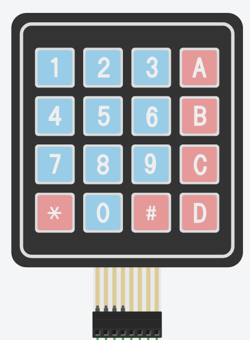
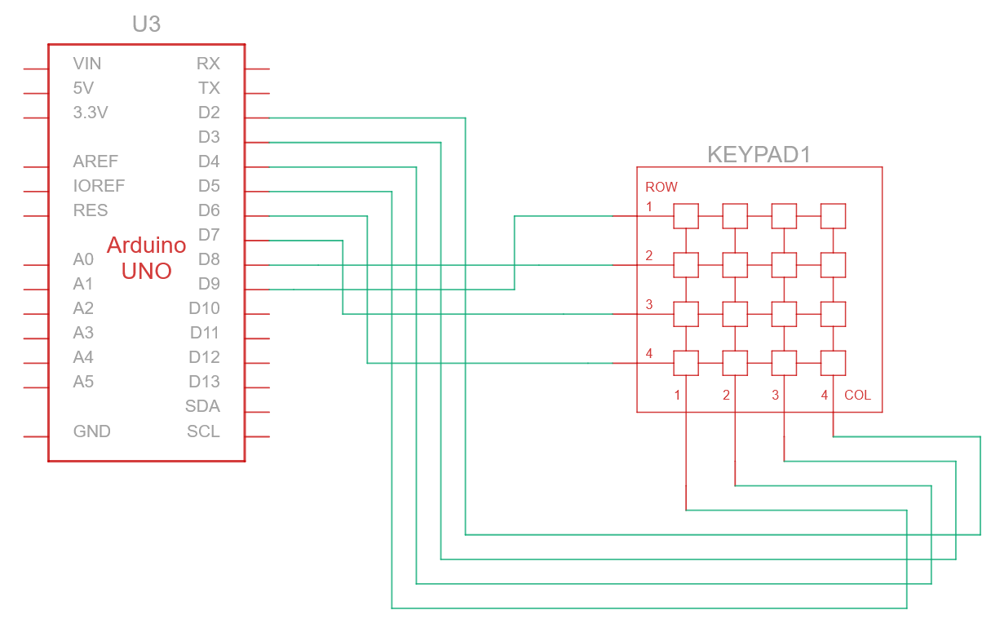
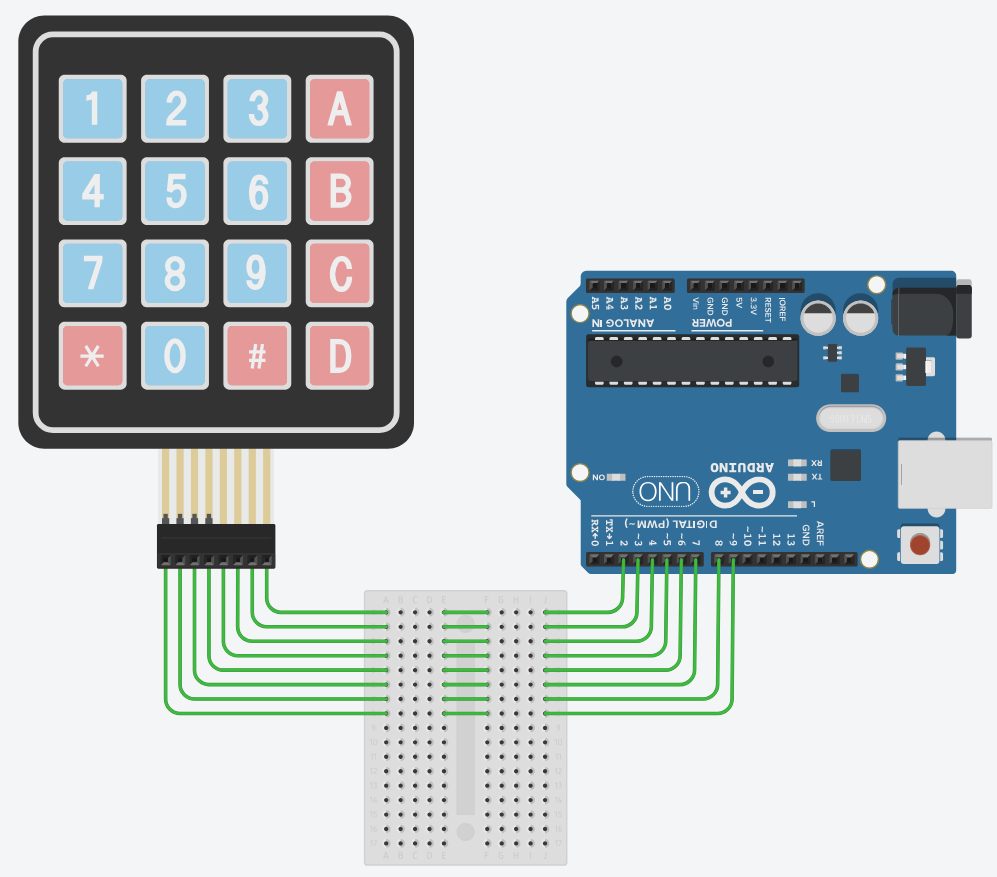

Input: Keypad

O Keypad é uma das formas de se adicionar entrada de dados mais complexas para
nosso projeto, pois ele é simples, e podemos utilizar a biblioteca Keypad.h
para trabalhar com ele.
Na sequência temos o esquema e o desenho de como fazer a conexão dele.


O teclado 4x4 funciona como uma matriz de contatos abertos organizada em 4 linhas e 4 colunas. Quando uma tecla é pressionada, ela conecta fisicamente uma linha a uma coluna, fechando o circuito naquele ponto. O Arduino identifica a tecla através de uma varredura: ele envia um sinal por uma linha de cada vez e verifica em qual coluna esse sinal “apareceu”; o cruzamento elétrico dessas duas coordenadas define a tecla exata.
Então precisamos definir quem são nossa linhas em quem são nossas colunas em
nosso código para utilizar com a biblioteca Keypad.h
Veja como fica o código para ler as teclas pressionadas dele.
/*******************************************************************************
* @file LerKeypad.ino
* @brief Demonstração básica de uso da biblioteca keypad.h do Arduino
* @author Prof. Emil Freme
* @adapted_from https://playground.arduino.cc/Main/KeypadTutorial/
* @license Creative Commons Atribuição 4.0 (CC BY)
*******************************************************************************/
#include <Keypad.h>
const byte LINHAS = 4; // Quantidade de linhas
const byte COLUNAS = 4; // Quantidade de colunas
// Mapeamento dos caracteres nas teclas
char teclas[4][4]={
{'1','2','3','A'},
{'4','5','6','B'},
{'7','8','9','C'},
{'*','0','#','D'}
};
// Definição dos pinos conectados ao Arduino
byte pinLinhas[4] = {9, 8, 7, 6}; // Pinos das linhas
byte pinColunas[4] = {5, 4, 3, 2}; // Pinos das colunas
// Inicialização da biblioteca Keypad
Keypad keypad = Keypad(makeKeymap(teclas),
pinLinhas,
pinColunas,
LINHAS,
COLUNAS);
// Função para tratar a tecla pressionada
void keyHandler(char key){
if(!key){ // Ignora se nenhuma tecla foi detectada
return;
}
Serial.println(key); // Exibe a tecla no Monitor Serial
}
void setup() {
Serial.begin(9600); // Inicia comunicação serial
}
void loop(){
char key = keypad.getKey(); // Verifica se houve entrada
keyHandler(key); // Processa a entrada
}